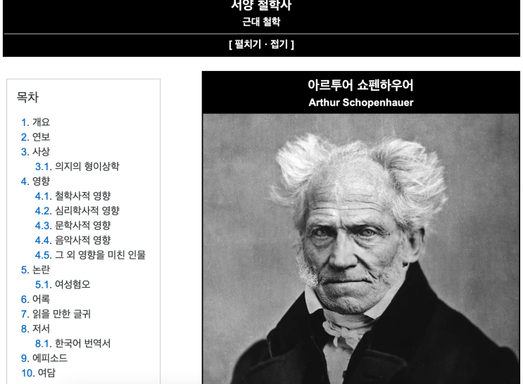
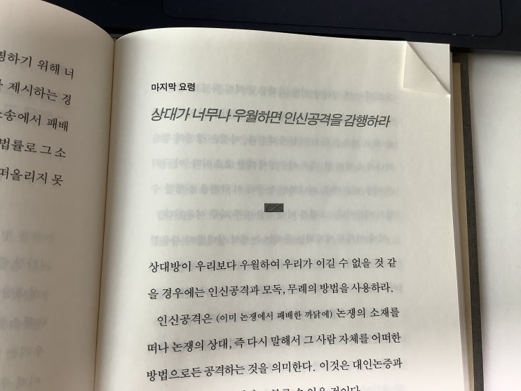
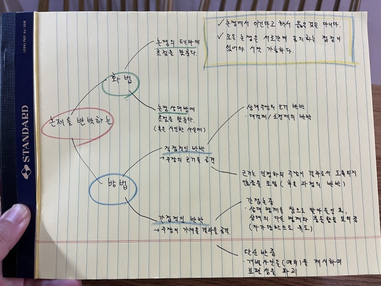
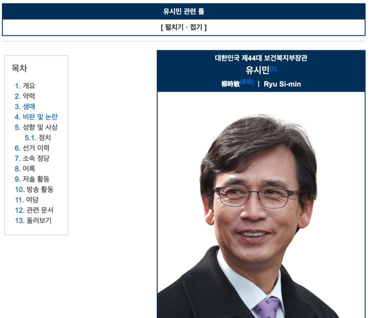

![[서평] 논쟁에서 이기는 38가지 방법 (쇼펜하우어) 이미지 1](../../assets/images/note-46/p271-01.jpg)
이번엔 제가 무려 아파트 재활용 날에 주워온 책입니다.
종이류 재활용 할려고 했는데 책들이 쌓여있길래 살펴보니 새 책들이 있더라구요. 아무래도 누군가가 사놓고 안본 책들인
것 같습니다. 거기에서 몇 권을 가져 왔는데 그 중 하나가 이 '논쟁에서 이기는 38가지 방법' 입니다.
제목과 두께로 봐선 일본산 쌈마이 자기개발서 같이 생겨서 처음엔 안 가져올려고 했는데 아뉘 작가가 쇼펜하우어네요?
응? 내가 아는 그 쇼펜하우어?
아니면 혹시 인터넷 쌈마이 작가들이 책 낼때 쓰는 필명?
이게 뭔가 싶어 그 자리에서 펴서 앞 부분을 읽어보니 정말 쇼펜하우어 책 입니다.
헐. ㅋㅋ

아따 헤이아치 형님 아니 쇼펜하우어 형님 말싸움 잘하게 생기셨소!
출처 : 만물의 진리 나무위키 캡쳐
책은 쇼펜하우어가 생전에 써놓기만 하고 발표는 하지 않았던 내용(일명 유고)인데 추후에 발견되어서 책으로 발간이 되
었고 대박이 났다고 함.
'논쟁적 토론술' 이라고 해서 진리를 추구하는 목적이 아닌 단순히 토론에서 승리를 위해서 어떻게 상대를 공격하고 불리
한 상황을 뒤집고 코너에 몰린 위기를 빠져나가는지 설명해놓은 책인데 책의 취지 답게 정말 아 쫌 더러운 이야기도 많이
써있음 ㅋㅋㅋㅋ (아! 그래서 발표를 안하셨구나!)
예를 들면 아래와 같은 것들.

아뉘 헤이아치 형님, 저한테 지금 리얼 철권 시키실려구요?ㅋㅋㅋ
"상대방이 우리보다 우월하여 우리가 이길 수 없을 것 같을 경우엔 '인신공격'과 '모독', '무례'의 방법을 사용하라.
또 사람들하고 협상을 빙자한 말싸움 하는게 직업이 아조씨가 이런 건 또 못 참치!
서양의 한 딱거리 하시는 철학자가 쓰신건데 여기서 뭐 좀 건져갈게 없을 까 해서 요 며칠 출근하기 전 마다 아침에 조금씩
읽다가 어제서야 다 읽었다.
책 내용은 제목대로 38가지 사례를 나열하고, 마지막에 논쟁적 토론술이란 것이 무엇인가 논문처럼 적어 놓은 것인데 역
자 말로는 원래는 그 순서가 반대였다고 한다. 아 그런데 끝까지 읽어보니 왜 반대로 책을 냈는지 알겠음 ㅋㅋ 뒷 부분 내
용 엄청 지겹고 뭔소린지 잘 모르겠따!
하지만 저 같은 천민에겐 앞 부분 38가지 요령만으로도 충분합니다.
요령1 확대해석하라 24
요령2 동음동형이의어를 사용하라 • 30
요령3 상대방의 구체적인 주장을 절대화하고 보편화하라 35
요령4 당신의 결론을 상대방이 미리 예측하지 못하게 하라 39
요령5 거짓된 전제들을 사용하라 41
요령6 은폐된 순환 논증을 사용하라 43
요령7 질문 공세를 통해 상대방의 항복을 얻어 내라 45
요령8 상대방을 화나게 만들어라 • 47
요령9 상대에게 중구난방식의 질문을 던져라 · 48
요령10 역발상으로 상대방의 의표를 찔러라 · 49
요령11 낱낱의 사실들에 대한 상대방의 시인을 보편적인 진리에 대한 시인으로 간주하라 • 50
요령12 자신의 주장을 펴는 데 유리한 비유를 재빨리 선택하라. 52
요령 13 상반되는 두 가지 명제를 동시에 제시하여 상대방을 궁지로 몰아라 . 56
요령14 뻔뻔스런 태도를 취하라 · 58
요령15 안개 작전을 사용하라 · 60
요령16 상대의 견해를 역이용하라 • 62
요령17 미묘한 차이를 이용하여 방어하라 · 64
요령18 논쟁의 진행을 방해하고 논의를 다른 방향으로 돌려라. 65
요령19 논쟁의 사안을 일반화하여 그 부분을 공격하라 • 66
요령20 서둘러 결론을 이끌어 내라 · 67
요령21 상대방의 변에는 변으로 맞서라 · 68
요령22 상대가 억지를 쓴다고 큰소리로 외쳐라 • 70
요령23 말싸움을 걸어 상대로 하여금 무리한 말을 하게 하라 • 71
요령24 거짓 추론과 왜곡을 통해 억지 결론을 끌어내라 · 73
요령25 반증 사례를 찾아서 단칼에 끝내라 • 74
요령26 상대방의 논거를 뒤집어라 · 76
요령27 상대가 화를 내면 바로 거기에 약점이 있는 것이다 · 77
요령28 상대방이 아니라 청중을 설득하라 · 78
요령29 상대방에게 질 것 같으면 화제를 다른 곳으로 돌려라 · 81
요령30 이성이 아닌 권위에 호소하라 · 85
요령31 당신의 말은 형편없는 내 이해력을 넘어서는군요 • 95
요령32 상대방의 주장을 증오의 범주 속에 넣어라 • 98
요령33 그것은 이론상으로는 옳지만 실제로는 거짓이다 • 100
요령34 한번 걸려들면 빠져나가지 못하게 하라 • 102
요령35 동기를 통해 상대방의 의지에 호소하라 • 103
요령36 의미 없는 말들을 폭포수처럼 쏟아 내라 107
요령37 상대가 스스로 불리한 증거를 대면 그쪽을 공격하라 • 109
마지막 요령 상대가 너무나 우월하면 인신공격을 감행하라·111
책 목차

마인드맵
(최대한 예쁘게 쓴건데 악필인건 좀 봐주라)
위 마인드맵은 책을 좀 정확히 이해하기 위해서 아조씨가 혼자 정리한 것인데, 책 머릿말에 나오는 토론술 관련 요령 내용
을 정리한 것이다. 위에 나열된 38가지 요령 중 대부분은 이 논리적 구조에 들어오게 된다. 그래서 이 마인드맵을 그려놓
고 책을 읽으니 좀 더 체계적으로 이해가 되었다.
아하 인신공격하는건 논쟁 상대방에 초점을 맞추는 화법이구나! ㅋㅋ
책 본문에도 씌여 있지만 이 책은 사실 실제 토론에서 자신이 사용하기 보다는 '상대가' 사용하는 것을 발견 했을 때 이에
당황하지 않고 상대의 개소리를 물리칠 수 있게 쓰는 편이 실제 목적에 가깝다. 토론장에서 승리를 위해 상대가 과감하게
개소리를 해댈 때 말려들지 않고 역으로 이것을 물리치기 위한 일종의 예방접종인 샘.
그나저나 이 책을 보니 자꾸 젊은 시절 토론왕이라고 불리던 전직 장관이자 현직 작가이신 그 분이 생각나는 건 기분이가
기분이기 때문인가 봉가보다~ 에이 그냥 기분인가 봉다~

출처 : 만물의 진리가 담겨있는 나무위키 화면 캡쳐
끝.